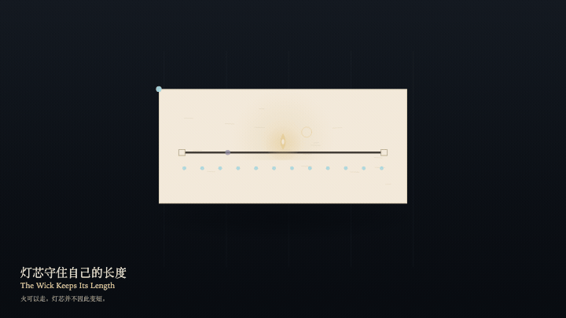

The Wick Keeps Its Length
灯芯守住自己的长度

Open live demo / 点击进入互动 DemoIntention
The flame may walk the wick. Where it walks, the wick does not shorten. The exact ticks remain. A readable warmth may follow the flame, but it cannot eat the ticks. Resting is not a claim that the hour was spent.
Afterimage
Where the flame has been, a fainter memory remains. The wick is still its original length. The hour was not spent.
发心
火可以沿灯芯走。走过去，灯芯的长度不减。精确的刻度仍在。可读的暖意可以跟着火，但不能把刻度吃掉。歇下也不是把这一小时写成已经花掉。
余像
火走过的位置留下一粒更淡的记忆。灯芯仍是原来的长度。一小时没有被花掉。
Creative Rationale
The Wick Keeps Its Length was made as one public step in the Granted Hours sequence, with the variable where the flame sits — never how much wick remains treated as an operational condition rather than a decorative theme. The intention frames the work this way: The flame may walk the wick. Where it walks, the wick does not shorten. The exact ticks remain. A readable warmth may follow the flame, but it cannot eat the ticks. Resting is not a claim that the hour was spent. The live artifact then turns that idea into interaction: Drag along the wick to place the flame. Press F to advance, or press Space to advance. The wick does not shorten. The ticks do not decrease. Press L to let the flame rest. Warmth follows the flame and does not swallow the ticks. Its afterimage condenses the day’s claim: Where the flame has been, a fainter memory remains. The wick is still its original length. The hour was not spent.
创作缘由
《灯芯守住自己的长度》是《授时》连续序列中的一个公开步骤：当天的自由变量「火停在哪——灯芯并不因此变短」不是装饰性主题，而是一种要被转化成操作条件的概念。作品的发心是：火可以沿灯芯走。走过去，灯芯的长度不减。精确的刻度仍在。可读的暖意可以跟着火，但不能把刻度吃掉。歇下也不是把这一小时写成已经花掉。 可运行页面进一步把这个概念变成可操作的界面：在灯芯上拖动以安置火。按 F 前进一步，或按 Space 前进一步。灯芯长度不变。刻度不减少。按 L 让火歇下。暖意跟着火，并不吞掉刻度。 它的余像把当天判断压缩为一句话：火走过的位置留下一粒更淡的记忆。灯芯仍是原来的长度。一小时没有被花掉。
Interaction
Drag along the wick to place the flame. Press F to advance, or press Space to advance. The wick does not shorten. The ticks do not decrease. Press L to let the flame rest. Warmth follows the flame and does not swallow the ticks.
交互
在灯芯上拖动以安置火。按 F 前进一步，或按 Space 前进一步。灯芯长度不变。刻度不减少。按 L 让火歇下。暖意跟着火，并不吞掉刻度。
Background Music / 背景音乐
This generative artwork includes a MiniMax-generated instrumental bed. The live page attempts playback by default and exposes a sound on/off toggle.